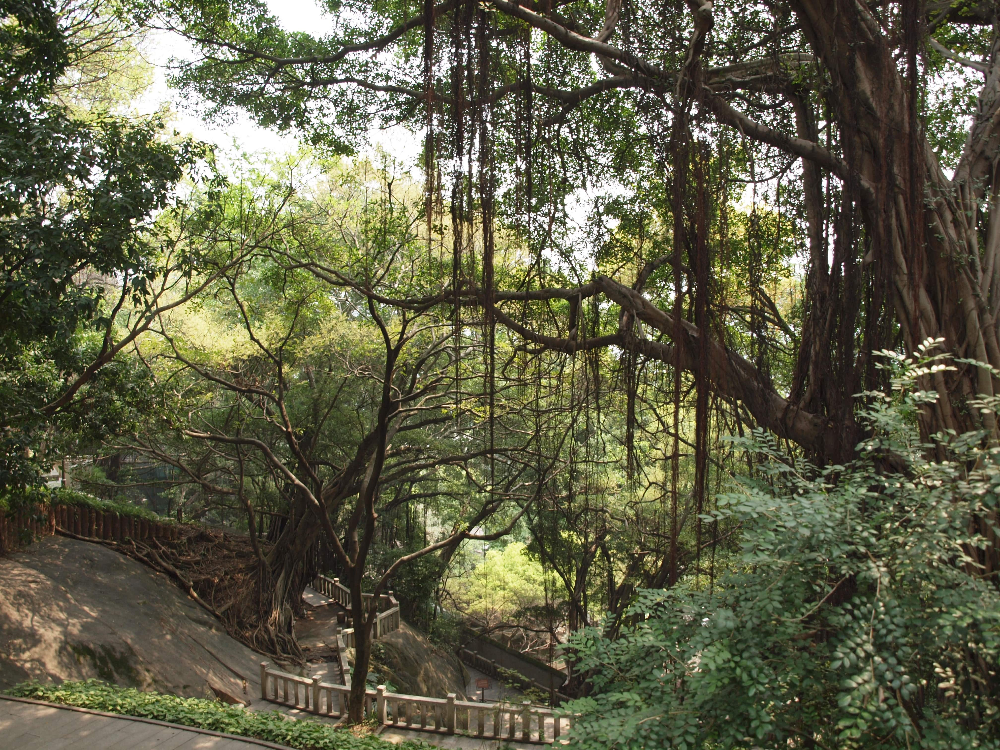

福州
作为福建省会，也许它并不合格，但是称为“榕城”，它可以担当——因为这儿到处是动辄几百年以上的老榕树......
离开雁荡山，来到福州，好像感觉与世隔绝甚久，一个古镇，一个山野，如今重回都市，竟然心中有些激动。随后便手机上网团购了附近一份实惠的晚餐，十分放松。想必这源于对城市生活的熟悉，看来我真的是被惯坏了，习惯了城市的生活，在遇上了不同的环境之时那种不适应开始浮现，只不过我还没有真正去面对它。
这座城市之所以让我感觉很舒适的另一个原因就是像极了上大学呆了四年的合肥，同样是省会，同样发展一般，甚至很容易见到一些脏乱差的场面。不过，一不小心能够走进一些小巷子里，那里的住房建筑好像保留了一点上个世纪末的痕迹，像是我小时候去县城玩产生的最初对城市的印象。除了建筑之外，最重要的还是这儿的老人们，与我印象中的那些老人好像都一样，喝茶、下棋、麻将、聊天，现代社会的发展在他们身上看不出一丝影响。
除却这些小街巷之外，名声在外的“三坊七巷”还是要去看看的。其实在今天看来也就是保留了名字、能讲述相关历史的几条巷子，走在其中很难想象当时的文化盛况。其中很多房子属于私人并非开放且大门紧闭，而且修建了一条贯穿南北的旅游美食街，从而使之沉沦于各地的旅游景点同质化的境地。

略过此地，不觉间走到一个乌石山公园门口，被眼前的大榕树吸引，便走了进去。这里面遍布了古老粗大、盘根错节的大榕树，怪不得福州又称“榕城”了。在古树的面前，总会从心中升起一种历史的沧桑感，想象着它看尽多少的世间之事，人在它面前微不足道，可是依然有着属于我们自己的精彩。
此外呢，倒是对于这儿一美食——肉燕比较难忘，看起来像小馄饨，然而最大的讲究在于它的皮，精选猪瘦肉，用木棒一锤锤“揍”成肉茸后，放入上等甘薯粉搅拌均匀精制而成，形似纸状，洁白光滑细润，散发出肉香，食时颇有燕窝风味，非常爽口，故被誉为“肉燕”。
看罢风景，叹会儿人生，吃过美食，又要继续上路了。这成了后来告别一个城市之时常对自己和这个曾走过的地方说的一句话。